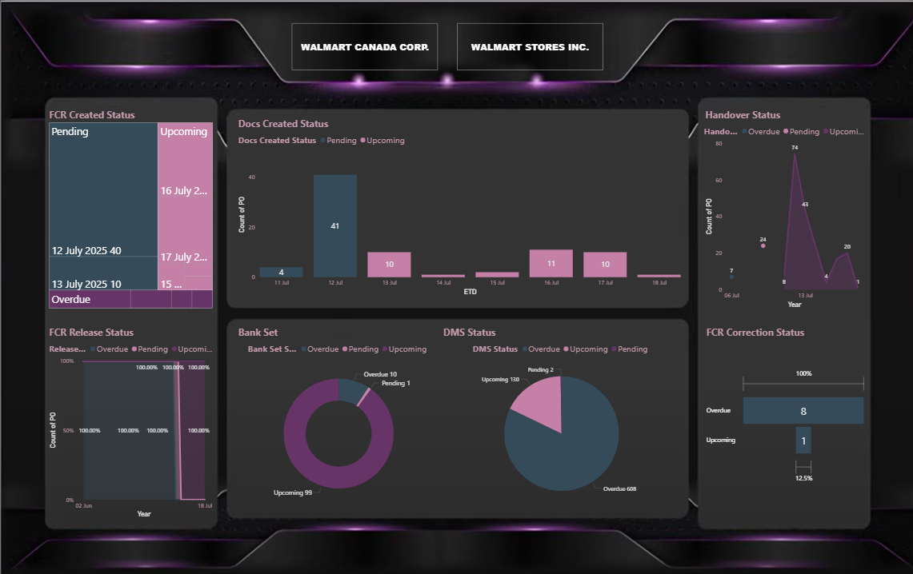

01. DATA INTELLIGENCE
Enterprise Dashboards
MFSG_Production_Live.pbix

MFSG Production Performance
A real-time tracking system analyzing Total Production vs. Order Qty. Includes granular stitching data by Line No. (L-1 to L-11) and automated outlier detection for delivery deadlines.
Walmart_Canada_Tracker.pbix

Welspun: Walmart Customer Tracker
Comprehensive tracker for Walmart Canada & Stores Inc. Visualizes PO Counts, FCR Release Status, and Bank Set deadlines. Features color-coded alerts for Overdue/Upcoming deliverables.